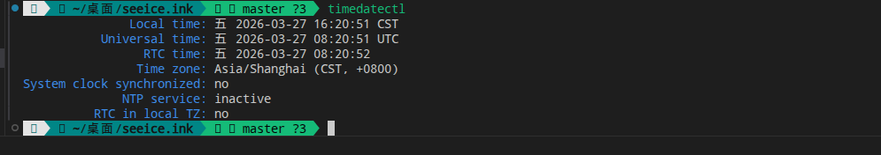

基本系统安装
你要开始玩转Arch的精髓吗？
难度：8.0
更换pacman镜像源
在/etc/pacman.d/mirrorlist中写入下述内容（建议多选或全选，以提高成功率）：
echo "https://mirrors.ustc.edu.cn/archlinux/$repo/os/$arch" > /etc/pacman.d/mirrorlist # USTC源
echo "https://mirrors.aliyun.com/archlinux/$repo/os/$arch" > /etc/pacman.d/mirrorlist # 阿里源
echo "https://mirrors.nju.edu.cn/archlinux/$repo/os/$arch" > /etc/pacman.d/mirrorlist # 南京大学源
禁用reflector：
systemctl stop reflector
Pacstrap安装系统
使用pacstrap安装基本系统：
pacstrap -K /mnt base base-devel linux linux-headers linux-firmware sof-firmware
安装基本工具
pacstrap -K /mnt git wget curl vim networkmanager sudo bash-completion
后续操作
建立fstab：
genfstab -U /mnt >> /mnt/etc/fstab
检查/etc/fstab：
cat /etc/fstab
若文件结构能与下面的文件对上，说明fstab没有问题：
# /etc/fstab: static file system information.
#
# Use 'blkid' to print the universally unique identifier for a device; this may
# be used with UUID= as a more robust way to name devices that works even if
# disks are added and removed. See fstab(5).
#
# <file system> <mount point> <type> <options> <dump> <pass>
UUID=A4D9-83D4* /boot/efi vfat defaults,umask=0077 0 2
UUID=b63578d9* / btrfs subvol=/@,defaults,compress=zstd:1 0 0
UUID=b63578d9* /home btrfs subvol=/@home,defaults,compress=zstd:1 0 0
UUID=b63578d9* /var/cache btrfs subvol=/@cache,defaults,compress=zstd:1 0 0
UUID=b63578d9* /var/log btrfs subvol=/@log,defaults,compress=zstd:1 0 0
tmpfs /tmp tmpfs defaults,noatime,mode=1777 0 0
# 这里的"*"是省略的UUID,方便你们详细核对文件结构
杂项
使用timedatectl检查时间，并与实际时间比对，确认无误：
